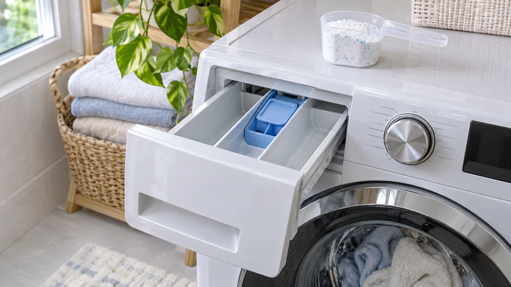

세탁 후 가루나 하얀 얼룩이 남는다면 세제를 더 넣기보다 투입량, 세제 종류, 수온, 세제함의 물길을 확인하세요. 과다 투입은 헹굼을 늘려도 잔류와 거품을 반복시킬 수 있습니다.
| 모양 | 가능한 원인 |
|---|---|
| 하얀 가루 | 가루세제 과다·저온 용해 부족 |
| 끈적한 덩어리 | 세제함 습기·막힘 |
| 거품이 계속 남음 | 드럼용 아닌 세제·과다 투입 |
세제와 표백제·식초를 임의로 섞거나 세제함 물길에 날카로운 도구를 넣지 마세요.
세제함으로 물이 거의 들어오지 않거나 누수·급수 오류가 동반되면 급수 필터와 밸브 점검이 필요합니다. 세탁기 거품이 남을 때 해결법과 급수 불량 점검법을 참고하세요.
세제 종류와 세제함 분리법은 세탁기 제조사 사용설명서를 따르세요.